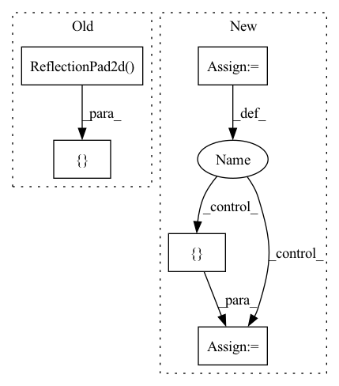

Pattern ID :1984

Before Change
in_channels = self.n_filters * (2 ** (i - 1)) if i > 0 else 3
out_channels = 2 * in_channels if i > 0 else self.n_filters
layers += [
nn.ReflectionPad2d(padding=1),
nn.Conv2d(in_channels, out_channels, kernel_size=4, stride=2),
nn.LeakyReLU(negative_slope=0.2, inplace=True)
]
layers += [
nn.Conv2d(in_channels=out_channels, out_channels=1, kernel_size=1, stride=1)
After Change
blocks = []
blocks += [nn.Conv2d(3, dim_in, 3, 1, 1)]
repeat_num = int(np.log2(img_size)) - 2
for _ in range(repeat_num):
dim_out = min(dim_in*2, max_conv_dim)
blocks += [ResBlk(dim_in, dim_out, downsample=True)]
dim_in = dim_out
blocks += [nn.LeakyReLU(0.2)]
In pattern: SUPERPATTERN
Frequency: 3
Non-data size: 5
Instances
Fragment ID: 6276815
Project Name: avivga/overlord
Commit Name: fa020664bf0dcbd11e72953117146be2cdbc3b48
Time: 2020-05-29
Author: avivga@gmail.com
File Name: model/modules.py
M Class Name: Discriminator
N Class Name: Discriminator
M Method Name: __init__(3)
N Method Name: __init__(2)
M Parent Class: nn.Module
N Parent Class: nn.Module
M File Name: model/modules.py
N File Name: model/modules.py
M Start Line: 193
M End Line: 206
N Start Line: 81
N End Line: 103
'>
Before Change
super(Generator, self).__init__()
// Initial convolution block
down_layers = [nn.ReflectionPad2d(3),
nn.Conv2d(in_channels, 64, kernel_size=7, stride=1, padding=0, bias=False),
nn.InstanceNorm2d(64),
nn.ReLU(inplace=True)]
// Downsampling
down_layers += [nn.ReflectionPad2d(1),
After Change
light: Whether to reduce the number of cells in the full connection layer. (default: `False`)
super(Generator, self).__init__()
self.light = light
down_layer = [
nn.ReflectionPad2d(3),
nn.Conv2d(3, 64, 7, 1, 0, bias=False),
nn.InstanceNorm2d(64),
nn.ReLU(inplace=True),
// Down-Sampling
nn.ReflectionPad2d(1),
nn.Conv2d(64, 128, 3, 2, 0, bias=False),
nn.InstanceNorm2d(256),
nn.ReLU(inplace=True),
nn.ReflectionPad2d(1),
nn.Conv2d(128, 256, 3, 2, 0, bias=False),
nn.InstanceNorm2d(256),
nn.ReLU(inplace=True),
// Down-Sampling Bottleneck
ResNetBlock(256),
ResNetBlock(256),
ResNetBlock(256),
ResNetBlock(256),
]
// Class Activation Map
self.gap_fc = nn.Linear(256, 1, bias=False)
self.gmp_fc = nn.Linear(256, 1, bias=False)
self.conv1x1 = nn.Conv2d(512, 256, 1, 1, bias=True)
self.relu = nn.ReLU(inplace=True)
// Gamma, Beta block
if self.light:
fc = [nn.Linear(256, 256, bias=False),
nn.ReLU(inplace=True),
nn.Linear(256, 256, bias=False),
nn.ReLU(inplace=True)]
else:
fc = [nn.Linear(image_size * image_size * 16, 256, bias=False),
nn.ReLU(inplace=True),
'>
Fragment ID: 6276821
Project Name: lornatang/ugatit-pytorch
Commit Name: 29402d1cfc1f9bbb66eed660fd84b48adcbdc188
Time: 2020-05-19
Author: liuchangyu1111@gmail.com
File Name: ugatit_pytorch/model.py
M Class Name: Generator
N Class Name: Generator
M Method Name: __init__(3)
N Method Name: __init__(3)
M Parent Class: nn.Module
N Parent Class: nn.Module
M File Name: ugatit_pytorch/model.py
N File Name: ugatit_pytorch/model.py
M Start Line: 25
M End Line: 54
N Start Line: 100
N End Line: 142
'>
Before Change
in_channels = self.config["discriminator"]["filters"] * (2 ** (i - 1)) if i > 0 else 3
out_channels = 2 * in_channels if i > 0 else self.config["discriminator"]["filters"]
layers += [
nn.ReflectionPad2d(padding=1),
nn.Conv2d(in_channels, out_channels, kernel_size=4, stride=2),
nn.LeakyReLU(negative_slope=0.2, inplace=True)
]
layers += [
nn.Conv2d(in_channels=out_channels, out_channels=1, kernel_size=1, stride=1)
After Change
blocks = []
blocks += [nn.Conv2d(3, dim_in, 3, 1, 1)]
repeat_num = int(np.log2(img_size)) - 2
for _ in range(repeat_num):
dim_out = min(dim_in*2, max_conv_dim)
blocks += [ResBlk(dim_in, dim_out, downsample=True)]
dim_in = dim_out
blocks += [nn.LeakyReLU(0.2)]
'>
Fragment ID: 6276818
Project Name: avivga/overlord
Commit Name: dffe3cb71a1c6c5500c019edf4a07d4443b84cd8
Time: 2020-05-19
Author: avivga@gmail.com
File Name: model/modules.py
M Class Name: Discriminator
N Class Name: Discriminator
M Method Name: __init__(3)
N Method Name: __init__(2)
M Parent Class: nn.Module
N Parent Class: nn.Module
M File Name: model/modules.py
N File Name: model/modules.py
M Start Line: 166
M End Line: 179
N Start Line: 98
N End Line: 117